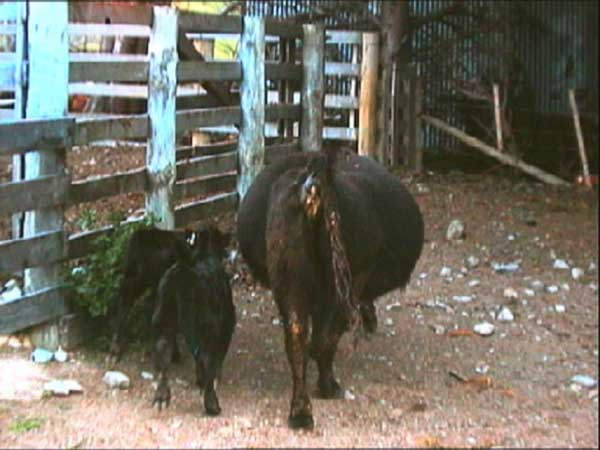

Bloat = an overdistention of the rumenoreticulum by gases of fermentation,
with or without foam or separated gas. May occur in sheep as well as cattle.
The three main types of bloat (ruminal tympany) based on aetiology
• Frothy (primary) - due to protein breakdown
in the rumen
• Free gas - gas and low pH
• Eructation dysfunction - extra ruminal causes
Most of the info below refers to frothy bloat.
Animal factors
• Diet-A major factor that determines bloat is the composition of the rumen contents (the ruminant's diet) and the rumen microflora. Plant proteins are the primary foaming agent. The rapidity of plant breakdown is a factor in bloat. Adaptation to diet is important, abrupt changes may lead to bloat.
• Genetic make up- the predisposition of animals is a known factor. Animals have different specific salivary proteins. Sialoprotein stabilizes the leaf protein, there is less sialoprotein in saliva of susceptible than bloat-resistant cattle.
• Rate of saliva production-High vs Low production. Pilocarpine (stimulates salivary secretions) has been used to determine the susceptibility of ruminants to bloat. Animals given pilocarpine that have a higher rate of salivary secretions are less susceptible to bloat.
Plant factors
• The greater the amount of leafy (legumes) soluble proteins in pasture or hay the greater the risk of bloat.
• Tannin-like compounds in plants protect from bloat. Some plants have more of these protective compounds.
• The more muco-polysaccharides secreted by encapsulated bacteria (slime producing bacteria) the greater the chance of bloat.
• Increased viscosity due to saponins, pectins, hemicellulose and protein. Optimal pH is 6 for maximum stabilization.
Environmental factors
• Climatic conditions affect the bloat potential of a given pasture. Wet, fast growth, high daily temperatures and cool nights (minimum night time temperatures below 10¾C).
The rate of digestion and protein content of the diet are important factors.
Legume hay or pasture bloat is different than bloat in grain-fed cattle. Proteins
increase surface tension of rumen fluid, increased surface tension allows stable
foam production because gas bubbles can not rise or coalesce due to fluid viscosity
and entrapment among fine particles at the fluid surface.
The organization of water (H-O-H, dipole) in the rumen normally requires energy
to maintain a surface charge. Proteins lower the energy needed to maintain the
surface tension and aid in the entrapment of gas (and thus gas bubbles form).
Fermentation in cattle produces >25 L gas (methane)/hour, therefore the ruminant
needs to eructate to prevent gaseous distention. Free gaseous distension of
the cardia portion of rumen stimulates eructation but frothy (entrapped gas)
bloat does not.
Frothy ingesta at neural receptors prevents the reflex relaxation of the cardia
during the secondary contraction of the forestomach that ordinarily lead to
eructation. Fluid or solid tactile stimulus of cardia decreases eructation.
Distention also stimulates the high stretch receptors which in turn inhibit
or decrease motility. Therefore frothy bloat decreases motility and eructation.

A severe case of bloat.
Distention of left paralumbar fossa; may be difficult to see in sheep due to
wool length. Bloat starts within an hour after ingestion of bloat-producing
legumes or hay, but typically becomes a problem on the second or third day.
Variable!
Dyspnoea, mouth breathing, protrusion of the tongue and extension of the head.
Cardiovascular function is impaired by the pressure on the thorax. Death is
due to asphyxiation.
Prevention of bloat relies on the ability of the farmer to predict when forages may pose a risk (tricky!). Types of forage, climatic conditions and animal susceptibility must be considered. Generally, the farmer does not know for certain that a pasture is dangerous until bloat occurs. Then, once prophylactic drugs are used, it is difficult to know when it is safe to stop. Most anti-bloat medications need to be administered one to two weeks prior to the danger period.
Altering Microflora
Altering ruminal flora can be used as a method to prevent bloat. This is obviously
too slow for treatment. The object is to decrease butyric acid, decrease lactic
acid and increase propionic acid, therefore rumen pH increases and less methane
gas is produced, there are fewer capsulated bacteria and protozoa (they are
thought to produce foaming mucopolysaccharides) and there is less tendency to
bloat (of frothy type).
Antibiotics
Monensin is a monocarboxillic acid, polyether ionophorous antibiotic widely
used to prevent bloat (and promote growth). It is most commonly used as Rumensin
anti-bloat Capsule (Elanco) This is a controlled release intraruminal capsule
which is effective for approximately 100 days. A plastic ring prevents regurgitation
during the 100 days, but usually within 12 months the capsule will be regurgitated.
Monensin forms a neutral lipophilic complex with cations and transport these
into and through biological membranes (ie, it acts as an ionophore), impairing
physiologically normal transmembrane ion gradients. Therefore, Na+ can freely
move into cell which results in osmotic injury, and thus reduces the number
of protozoa and encapsulated bacteria in the rumen. Changes in the rumen flora
result in decreased butyric acid, decreased lactic acid and increased propionic
acid production. Monensin is also used as a growth promoter in cattle overseas
because of an increase in propionic acid and a decrease in lactic acid production
(and decrease in bloat).
Monensin is toxic in most monogastric species: LD50 Cattle about 20 mg/kg, LD50
Horse 2 mg/kg monensin kills horses (nb. it is also the standard coccidiostat
in broiler chicken rations - do not let horses get anywhere near these). LD50
Dog 2 mg/kg but dogs are unlikely to eat it. The toxicity is potentiated by
macrolide antibiotics. Accidents or poor care of mixing machines may result
in toxic residues ending up in dog or horse products or cattle feeds at unacceptable
levels.
Copper sulphate is sometimes used in sheep for its antibacterial action.
Mild bloat probably requires passing a stomach tube and the use of one of the
following remedies such as oil or detergent.
Acute and severe bloat requires life-saving "heroics" remembering
that frothy bloat will not be easily reduced by passing a stomach tube due to
the entrapment of gas. Rumenotomy is often a necessity in a life or death situation.
Oils
Oils act as "wetting agent", i.e. they decrease surface tension and
destabilize the foam in the rumen. Any edible oil will do, peanut, sunflower,
soyabean (Some oils such as turpentine and soya flavour the milk and butter
which may result in penalties to the dairy farmer). Do not use fish oils - they
stabilise the foam.
Liquid paraffin is also used as an oral treatment or sprayed on pastures (sometimes
added to water in drinking troughs). The duration of action is several hours
given a twice daily dose of 60-120 mls for prevention. For long term treatment,
liquid paraffin will interfere with carotene absorption and will reduce the
carotene and tocopherol content of the butter. Oils are better suited to prevention
than to treatment.
Synthetic Non-Ionic Surfactants
There are many commercial solutions containing ethoxylated alcohols (poloxamers,
polyethylene - polypropylene glycols of various moleculer weights) which reduce
or prevent the build up of stable foam and gas in the rumen by decreasing surface
tension.
Ethoxylated alcohols such as poloxalene are surfactants which have a faster
action and require smaller doses than oils. They have a duration of action of
about 10-18 hours. They are sometimes used in medicated blocks. They should
be administered several weeks prior to the "bloat season". These are
the most popular drugs used both in the treatment and prevention of bloat because
they are stable and easy to use. Always add the detergent to water.
These compounds are very safe, and are often also used as emulsifiers in injectable
formulations of drugs.
Silicones such as dimethicone are sometimes used. They are more expensive and
are always given orally.
Ionic surfactants
Ionic detergents such as docusate (dioctyl sodium sulphosuccinate) were often
included with oils to improve their destabilization of foam but have been replaced
by non-ionic detergents. They are not used often because of their toxicity -
they effectively make the lipds of cell membranes more water soluble - water
rushes into the cells and they die. They are especially toxic for calves less
than 12 months old, and are not recommended. Failure to rinse buckets adequately
before feeding calves can result in toxicity.
Clinical signs of toxicity include central nervous system signs and diarrhoea.
The detergent will dissolve (and thus denude) gut mucosa. The oesophageal groove
in calves diverts liquids to abomasum. Even in adult dairy cows, the therapeutic/toxic
dose is quite close so take care. These products can cause toxicity in adult
ruminants if given directly into the abomasum.
When used for prevention, surfactants are given every 12 hours or as per manufacturer's
recommendation.
Emergency treatments
Alcohol such as whisky or vodka (diluted) might work, but only if nothing else
is at hand. Milk or cream may work. Stab release of the pressure in the rumen
using a knife or a trochar/cannula is very unlikely to work in frothy bloat
- a full rumenotomy is required.
Free gas bloat
This usually occurs in grain fed animals - stomach tube to release gas, or in
dire emergency only, use troachar and canulla. The animal will probably have
to be treated for acidosis (iv sodium bicarbonate - see fluids notes). Cattle
fed on grain are usually also fed a variety of antibiotics to alter rumen flora
and reduce lactic acid production - see antibiotics notes.
Abomasal Bloat in Lambs
Feeding systems that provide milk replacer to lambs ad lib, i.e. large quantities,
infrequently or hand reared lambs. Particularly lambs fed unrefrigerated milk
replacer that has been kept at 15¾C or higher twice a day (Refrigerated replacer
is not as likely to cause bloating)
It is thought to be caused by sudden overfilling of the abomasum followed by
proliferation of organisms which release abundant quantities of gas. Severe
distention causes compression of the thoracic and abdominal viscera and blood
vessels. Lambs become distended within 1 hour of feeding and die shortly after
distention is clinically obvious. At necropsy, the abomasum is grossly distended
with gas, fluid and milk replacer that is usually not clotted. Mucosa is hyperemic.
Treatment involves passing a stomach tube to relieve gas. Recommend preventative
measures to avoid future occurences. Prevention - include 0.1% formalin (37%
formaldehyde) to 20% solids in milk.